FZ / 001
FZ / 001Performance, up close
Music film · Concept direction

 PERFORMANCE
PERFORMANCE ATMOSPHERE
ATMOSPHERE PROCESS
PROCESS ELSEWHERE
ELSEWHERE THE FRAME
THE FRAMEEvery project starts with a feeling, an idea or a question. The form follows from there.
FZ / 001Music film · Concept direction
 FZ / 002
FZ / 002Visual story · In development
 FZ / 003
FZ / 003Art direction · Experiments
 FZ / 004
FZ / 004Moving image · In development
Not just what you see.
What you feel.
FRAME ZERO is a space for ideas to become images. Rooted in music, culture and visual storytelling, the practice brings concept, mood and detail together to make work with a distinct point of view.
The aim is simple. Make every frame count. Keep the work honest. Never let the image exist without a reason.
A hands-on approach to developing a visual idea and carrying it through to the final frame.
Concepts, references, moodboards and a visual language built around the story.
Visual worlds for artists, from the first treatment to the final cut.
Campaign imagery, experimental films and ideas that live beyond the screen.
For music videos, visual ideas and creative collaborations. If the idea means something to you, let's talk.
Find us on Instagram ↗Replace this link with your profile before launch.